כן, גם לך יש אתר.
בכל זאת, לא יכולתי לתת לתאומה שלך אתר שלם ולשלוח לך "מזל טוב ❤️" בוואטסאפ.
זה היה יכול להיות קצת לא נעים בארוחת שישי.
קופה, אבל קופה חמודה
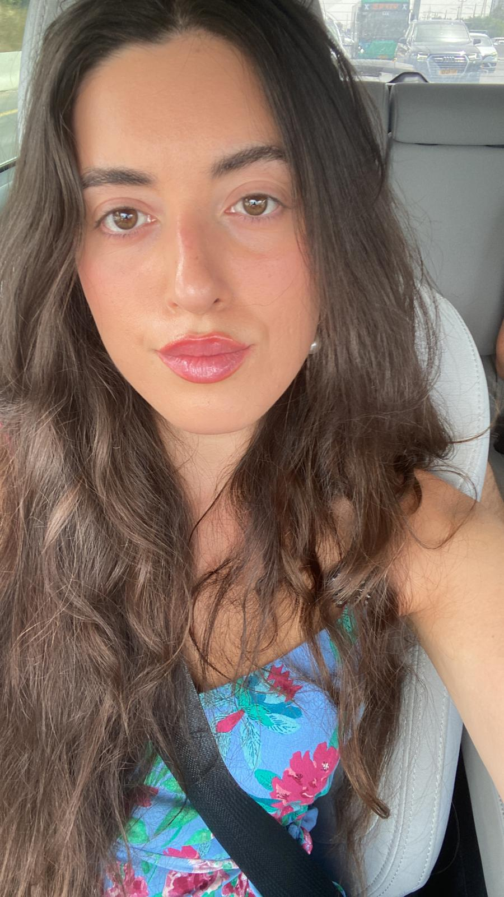
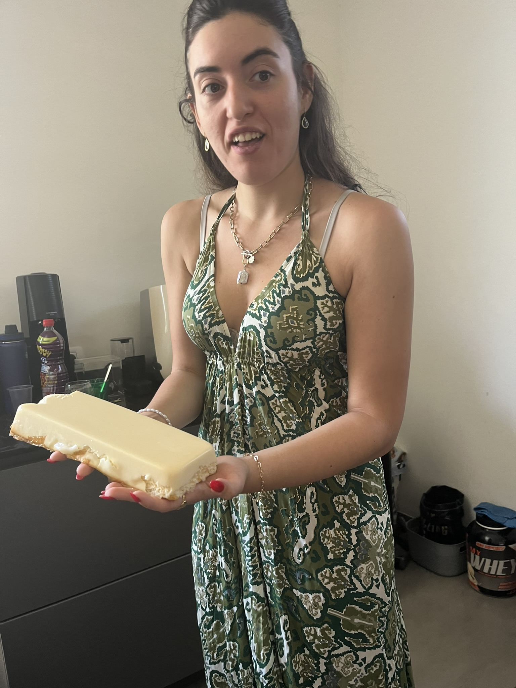
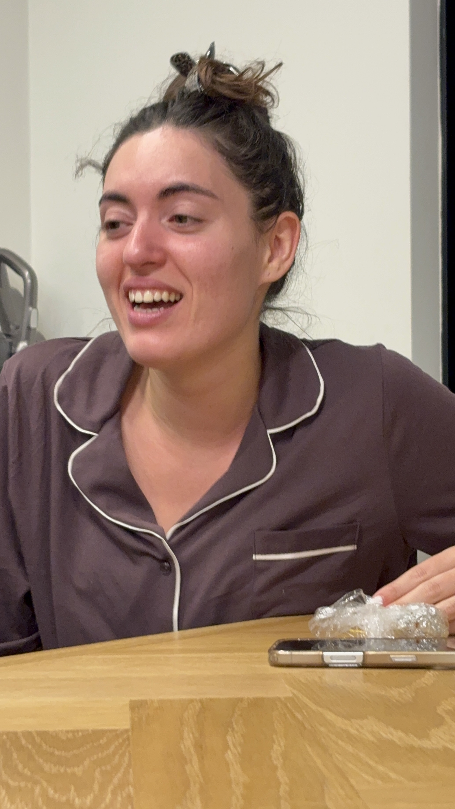
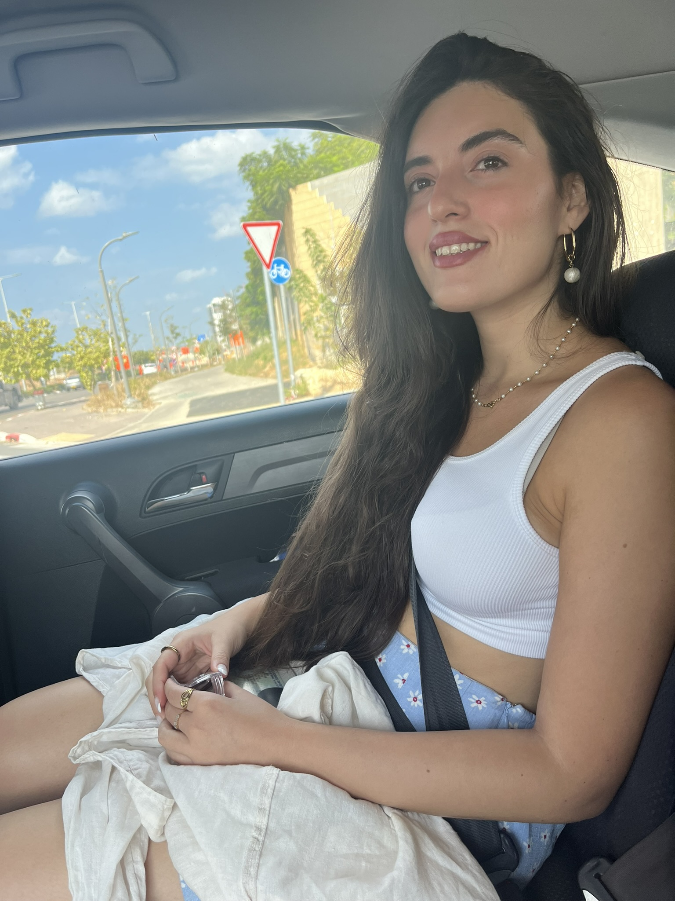
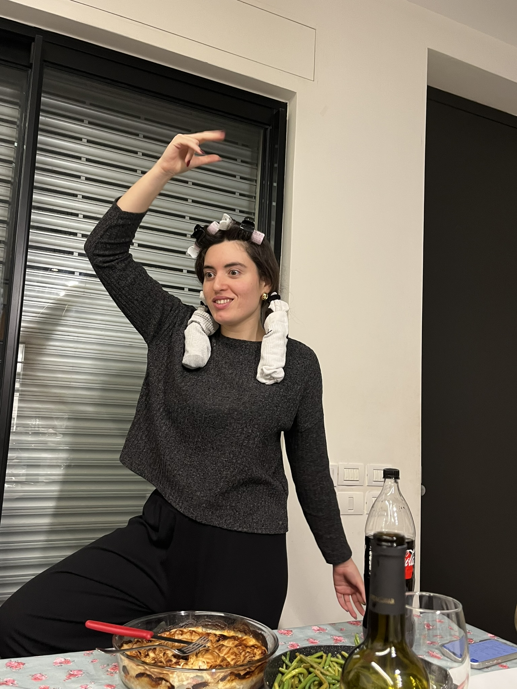
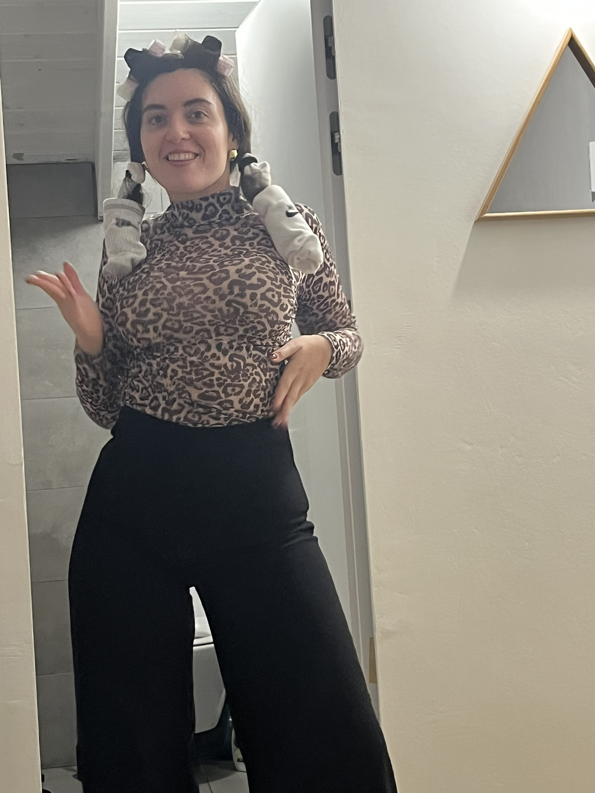
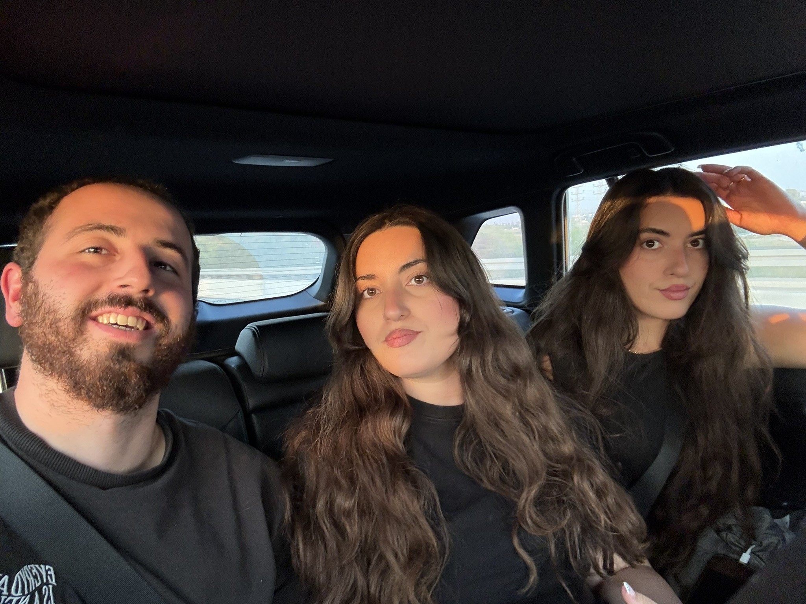
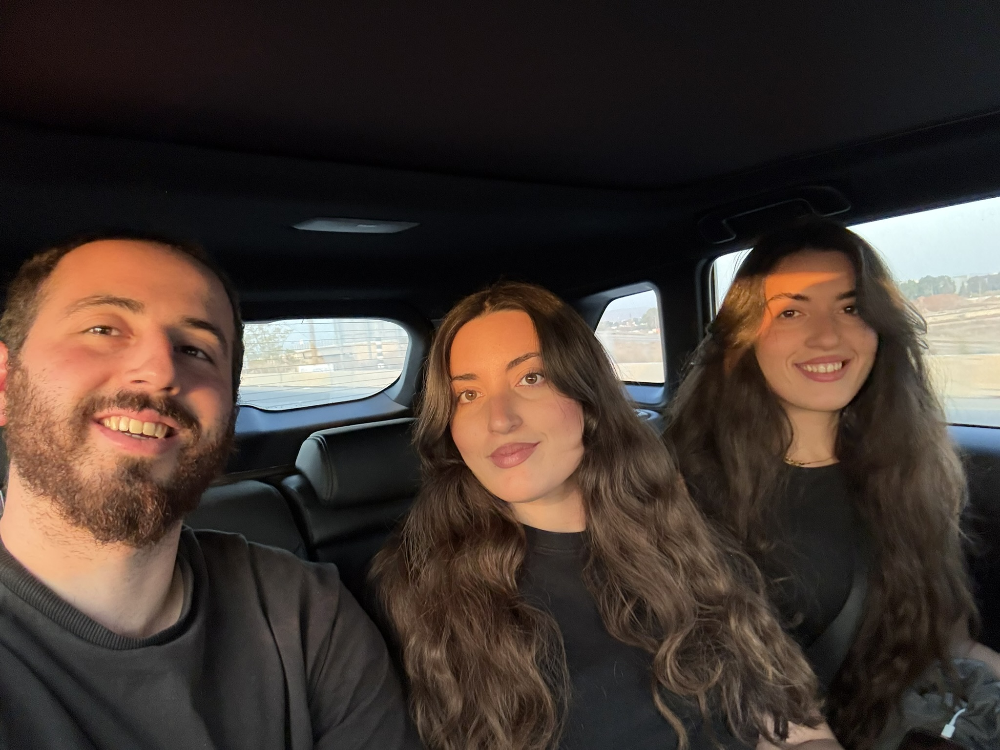
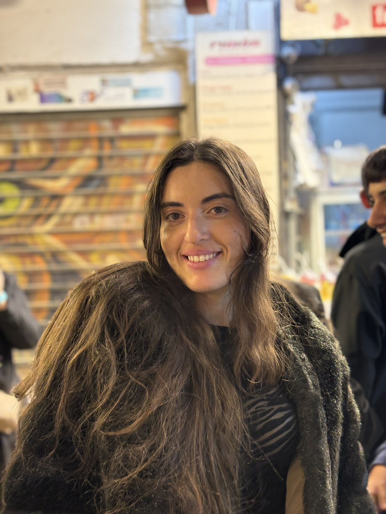
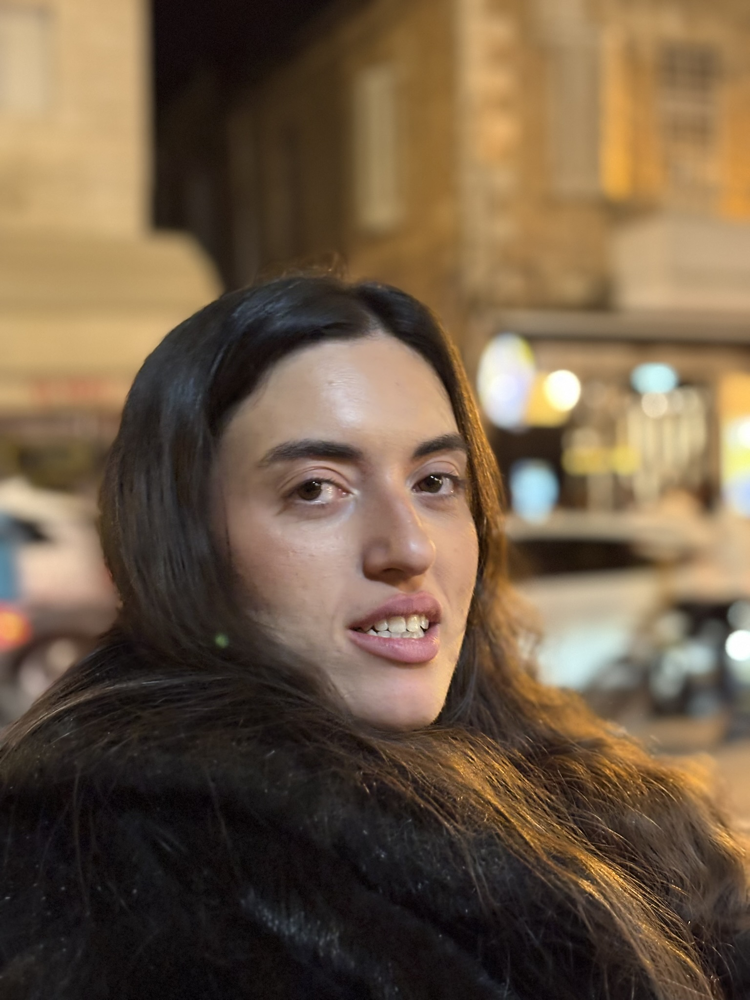
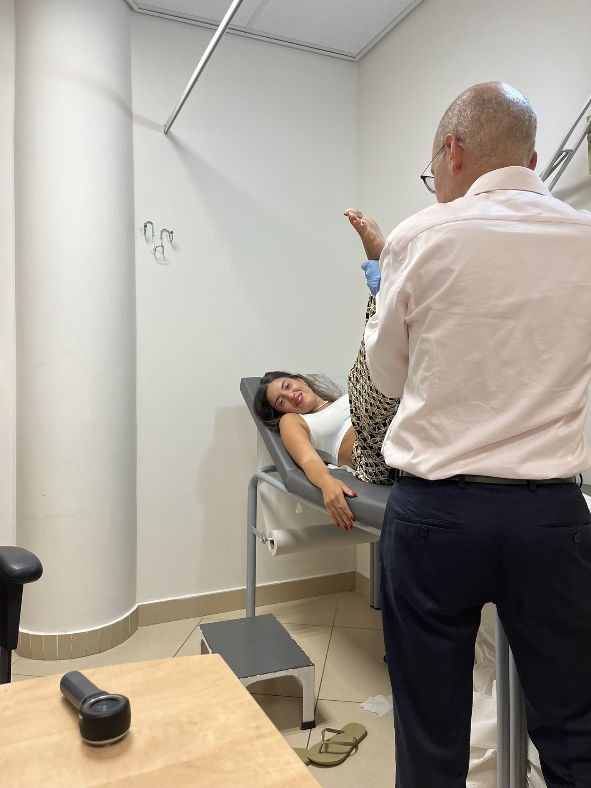
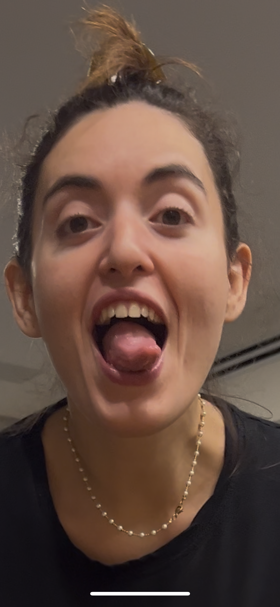
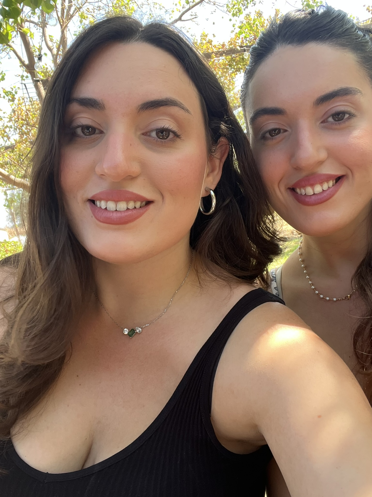
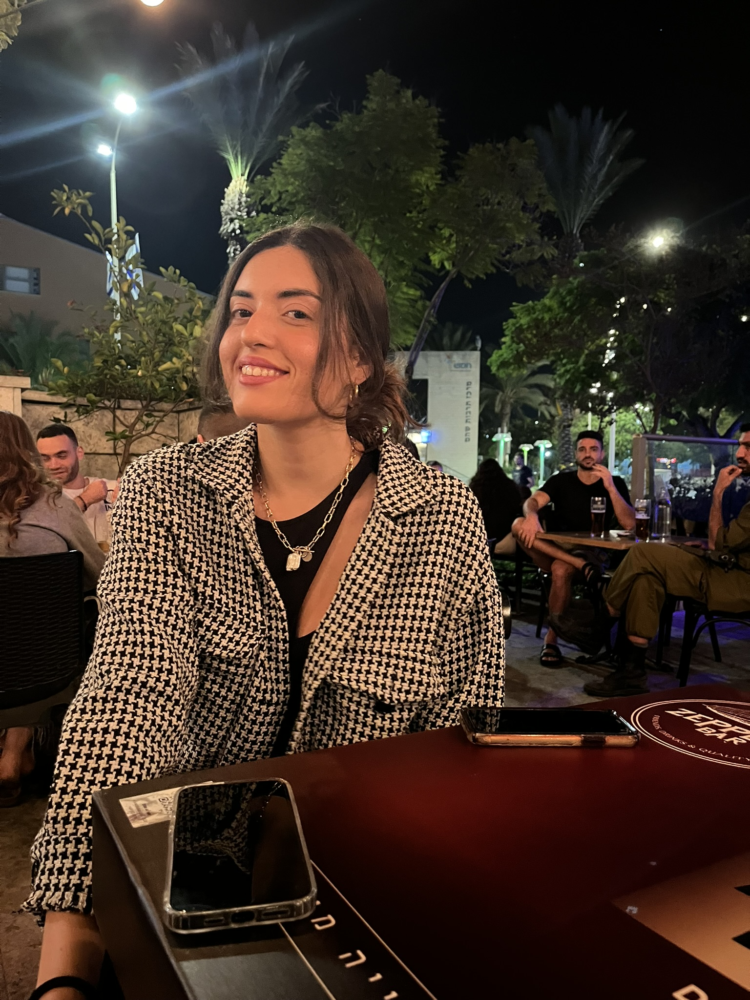
מעבר לכל הצחוקים וההצקות, אני באמת שמח שאת בחיים שלי.
כשהכרתי את נועה, לא ידעתי שאני מקבל איתה גם עוד בן אדם שיהפוך למשפחה שלי.
יש לנו קשר שאני באמת אוהב. אני אוהב את השיחות שלנו, את שיחות הנפש, את הפתיחות שיש בינינו, את זה שאנחנו יכולים לדבר ברצינות על החיים ובערך שלוש דקות אחר כך אני כבר מוצא דרך להציק לך.
ואני אוהב אותך באמת כמו אחות.
שזה בערך כמו שאני אוהב את נועה, רק בלי החלק הרומנטי, כי בואי, יש גבול גם לאתר הזה.
אני שמח שיש לי אותך כאחות וכגיסה, ושאת חלק מהמשפחה שאני ונועה בונים.
אני מאחל לך שבגיל 25 תהיי מאושרת, שתמשיכי להיות בדיוק מי שאת, מצחיקה, כיפית, פתוחה, רגישה וכן, גם קצת לחוצה, כי כנראה שכבר מאוחר מדי לטפל בזה.
שתעשי דברים שאת אוהבת, שתהיי מוקפת באנשים שעושים לך טוב, שתאמיני בעצמך, ושיהיו לך המון סיבות לצחוק.
ואני מבטיח מצדי להמשיך לעשות את מה שאני עושה הכי טוב:
להציק לך בכל הזדמנות אפשרית.
אוהב אותך המון,
עמית
נ.ב. אל תתחילי להשוות עכשיו בין האתר שלך לשל נועה.
היא מתחתנת איתי. בכל זאת היא מקבלת עדיפות.